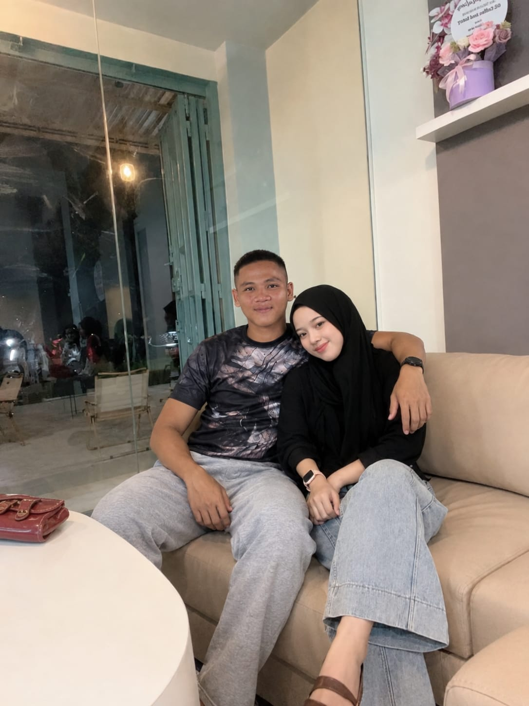
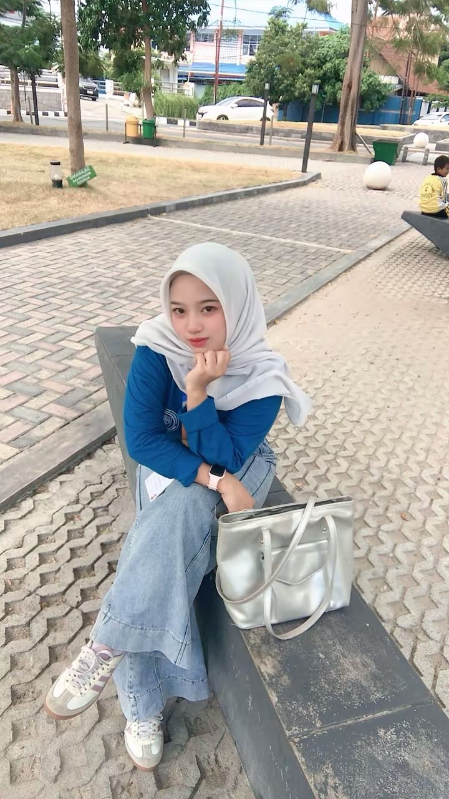
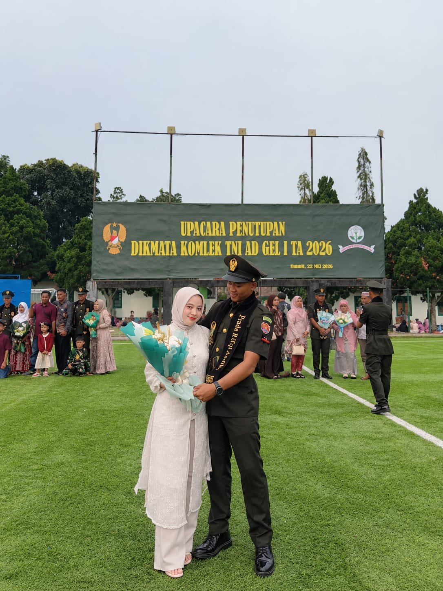

Hai! Aku LALAPO ✨
Aku adalah seseorang yang suka dengan kreativitas, pengalaman baru dan hal-hal sederhana yang membuat hari menjadi lebih menyenangkan.
Aku juga memiliki ketertarikan terhadap dunia digital dan sedang belajar untuk mengembangkan kemampuan di bidang Bisnis Digital.
Website ini merupakan salah satu bentuk kreativitas untuk memperkenalkan diriku melalui dunia digital.
Things I Love 🌱
Memasak
Bereksperimen dengan makanan.
Makan
Menikmati makanan enak.
Foto
Mengabadikan momen.
My Gallery 📸



My Dream 🌿
Aku ingin terus berkembang, mencoba berbagai pengalaman baru dan membangun sesuatu yang bermanfaat melalui kreativitas dan teknologi.